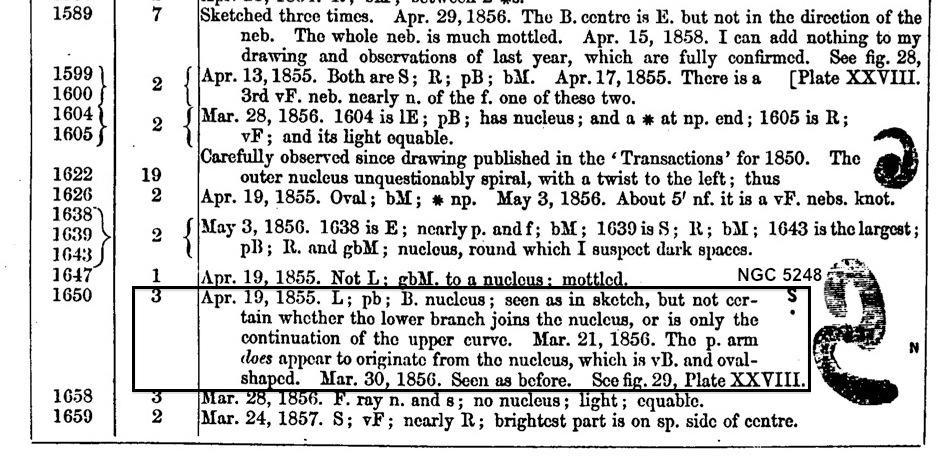
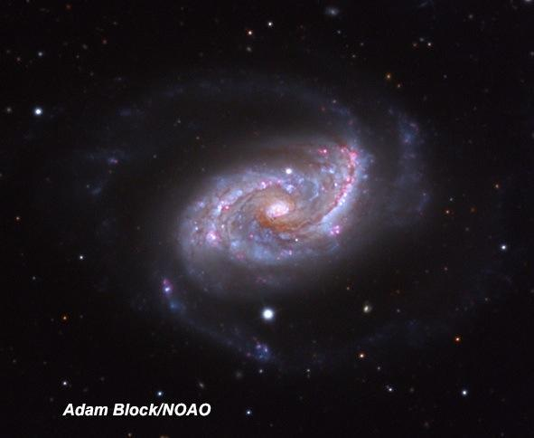
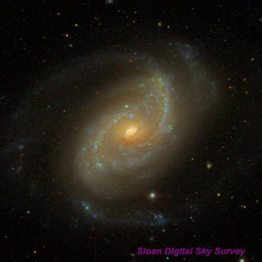

NGC 5248
- Aliases: UGC 8616 = MCG +02-35-015 = CGCG 073-054 = PGC 48130
- Type: SAB(rs)bc
- RA: 13h 37m 32s
- Dec: +08° 53’ 07”
- Size: 6.2'x4.5'
- Mag: 10.3V, 11.0B
- Surface Brightness: 13.8 mag/sq. arcmin
The Atlas of Universe lists it as the main galaxy of a small subgroup of the Virgo III Group, at the extreme eastern end of Virgo -- not far from M5.
NGC 5248 was discovered by -- you guessed it -- William Herschel on 15 Apr 1784 (sweep 194). Who knows, perhaps he had just finished doing his taxes! ;) He recorded H. I 34 as "vB, nearly R and cometic but the nucleus is large and seems to consist of bright close stars, resolvable." He made a second observation on 1 May 1786 (sweep 560) and logged "vB, cL, E from np to sf, a small bright nucleus."
John Herschel made a slightly more detailed observation on 18 Jan 1828 (sweep 120) and noted "pB; vL; E 60° np to sf; psbM; 3' long, 2' broad." The spiral structure was discovered in 1855 using Lord Rosse's 72-inch.
On 19 Apr 1855, observing assistant R.J. Mitchell reported "Large and pretty bright, bright nucleus. Seen as in sketch, but not certain whether the lower branch joins the nucleus or is only the continuation of the upper curve." On 29 March 1856 he recorded "The preceding arm does appear to originate from the nucleus, which is very bright and oval shaped." Here's the page, including his notes and a rough sketch, from Lord Rosse's 1861 publication. The two brightest spiral arms are clearly shown in more detail on Plate XXVIII, fig 29 (does someone have a good photocopy of that page?)

Of course, it doesn't require a 72-inch to resolve the two main arms. Here are my notes with my 18-inch --
18" (6/7/08): bright, large, elongated NW-SE, 3.5'x2.4', sharply concentrated with a very bright, round 25" core. At 200x, two spiral arms extend out from the central region. The brightest and longest arm is attached at the west side of the core and gradually sweeps to the north. A couple of very faint, very small knots are embedded in this arm including one due west of the core. On the east end of the core a matching arm is attached that curves a bit more as it swings towards the south in a counter clockwise orientation. A faint star is just north of the central region and a brighter star is 1.7' S of center.
Images reveal numerous pink HII regions and blue OB-stellar associations in the two high surface brightness spiral arms as well as the low surface brightness outer arms. A few were noted above. But the 1983 Hodge-Kennicutt "An Atlas of H II regions in 125 galaxies" lists nearly 100 regions.

I picked off a number of these knots through Jimi's 48-inch three years back -- quite an impressive view!
48" (5/15/12): beautiful two-armed spiral, very large, elongated ~3:2 SW-NE. The brightest portion is ~3.8'x2.5' but the faint, outer spiral arms increase the diameter to at least 5'. The galaxy is sharply concentrated with an intense oval core. The brighter spiral arm is attached to the north of the core, wrapping counterclockwise around the east and southeast side and is lit up by several fairly prominent knots. The arm dims fairly abruptly on the southeast side but continues unwrapping to the south, extending outside and just beyond a mag 13.5-14 star 1.7' SSW of center. A mag 15.3 star is 0.6' N of center, just outside where the arm emerges on the north side.
At least four distinct HII knots are in or near this arm, along with brighter segments. The following designations are from the 1983 Hodge-Kennicutt "An Atlas of H II regions in 125 galaxies". A faint knot, [HK 83] 26/28 is between this star and the core. The arm brightens along the east side of the core and includes the faint knots [HK 83] 13/15, 28" NE of center, and [HK 83] 5/6 1.0' ESE of center. The most prominent knot along with this arm is [HK 83] 5/6, 1.2' SE of center.
Along the western arm, the first knot is [HK 83] 63, 0.8' W of center. A larger brighter knot or arc ~1.1' NW of center includes [HK 83] 74/77/81. A faint knot, [HK 83] 66/71, is near the tip of this arm 1.5' NNW of center. A similar knot, [HK 83] 53, is 25" SE, on line with the core.

As always, “GIVE IT A GO AND LET US KNOW”